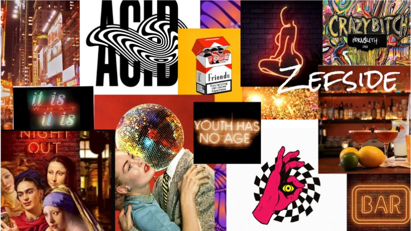

GRUNDLÆGGENDE INDHOLD
I tema 05-Grundlæggende indhold blev vi introduceret for bla. video-og lydoptagelse, video- og lydredigering, forskellige tests herunder 5-sek test og BERT, Github & Netlify. I dette tema skulle vi i grupper ud og finde en virksomhed med en hjemmeside vi kunne redesigne, dette betød altså vi skulle finde en virksomhed og følge deres stil. Før vi begyndte at gøre overvejelser til redesignet lavede en 5-sek test og BERT af deres nuværende hjemmeside. En 5-sek test, tester om brugeren hurtigt kan finde frem til hvad sitet handler om. Med en BERT får man indsigter om hvordan brugeren opfatter sitet. Vi lavede også noget deskresearch om nattelivet og hvad folk vil have af oplysninger fra en bars hjemmeside. vi fandt frem til hvad virksomhedens udstråling var og lavede dertil et moodboard og styletile med farver på deres nuværende side samt farver fra stedet. før vi begyndte at filme lavede vi et storyboard, hvilken b-roll ville vi have og hvad skulle fortællingen være. Det samme gjorde vi med billederne hvilke shots ville vi have og hvad skulle “fortællingen” være. Derudover fordelte vi arbejdsopgaverne hvem tog billeder, hvem filmede osv. Før vi kom ud og filme lærte vi om ophavsret, det er altså vigtigt at vide hvem der ejer billeder man bruger og om man må bruge det, derudover er det også vigtigt at have samtykke af dem man tager billede af/filmer. For at arbejde mest struktureret lavede vi et scrumboard og holdte daily scrum, dette gjorde vi for at vide hvor langt vi hver især var med vores forskellige opgaver, hvilke problemer der var opstået mm. Der blev lavet et Gihub repository så alle i gruppen kunne kode samtidig. Vi lavede igen en 5-sek test og en lighthouse test, lighthouse testen er til for at lave de sidste optimeringer af sitet. vi lavede derefter en 5-sek test med det nye site for at teste om brugeren hurtigere og bedre kunne komme frem til hvad sitet handlede om.
Hvad ville jeg gøre anderledes?
Da min gruppe ikke var så heldige med virksomheden og fik aflysninger grundet sygdom og derefter intet svar, var vi nødsaget til at låne Guldbar og selv lave interviewet samt filme b-roll med det vi havde. Det var altså svært at få den helt rigtige udstråling/vibe til hjemmesiden som vi gerne ville have.Dette gav ikke det mest optimale resultat. Derudover var det gruppearbejde hvilket også betød at man måtte gå på kompromis. Hvis det stod til mig havde farvevalget været lysnet lidt, et andet splashbillede der tydeliggjorde hvad det var for en virksomhed. i videoen havde det været oplagt at bruge virksomhedens soundcloud playliste som inspirationskilde og finde noget royaltyfree musik der minder om for at give en stemning for stedet.
link til sitet:
Tema 05- Redesign


PILOT PROJEKT
I starten af temaet skulle vi lave en passionsvideo, dette var for at danne kendskab til adution, premiere pro og udstyr til video-og lydoptagelse. vi forberedte en række spørgsmål vi kunne spørger vores interviewperson om, lavede et storyboard over den B-roll vi vile tage under optagelserne. vi lavede derudover et site hver for sig.
Hvad ville jeg gøre anderledes?
Da jeg har fået mere kendskab til Premiere Pro ville jeg have klippet videoen sammen, derudover ville jeg have taget flere B-roll klip. Med mere B-roll har man haft mere mulighed for at lave flere transitions osv.
DOKUMENTATION/ INSPIRATION